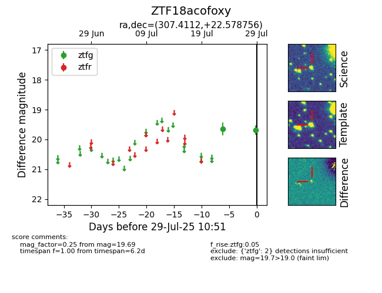

Target ZTF18acofoxy at 2025-07-29 10:51, see:
FINK: fink-portal.org/ZTF18acofoxy
Lasair: lasair-ztf.lsst.ac.uk/objects/ZTF18acofoxy
ALeRCE: alerce.online/object/ZTF18acofoxy
alt names
ZTF18acofoxy (ztf,fink)
coordinates:
equatorial (ra, dec) = (307.4112,+22.57876)
galactic (l, b) = (64.5303,-9.57752)
photometry
last ztfg=19.69
2 ztfg detections
